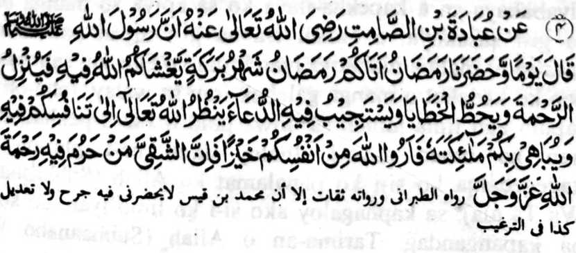

Hadith - 4

Miyakathitayan ko 'Ubadah bin Samit (Radhiallaho Anho) a mata-an a so Rasulollah (Sallallaho ‘Alaihi Wasallam) miyatharo iyan ko masa a kiyapakatalingoma o Ramadhan, “Miyakatalingoma rekano so Ramadhan a olan-olan a babarakaten a iphangalimo kano o Allah (Subhaanaho Wa Ta 'ala) si-i ko soled iyan (a olan-olan) na phakatoronen Niyan rekano so Limo. Go perila-an Niyan so manga dosa niyo, go tharima-an Niyan so manga pangeni go pagilain o Allah (Subhaanaho Wa Ta'ala) (sa kalimo) so kapezasakaya iyo si-i ko soled iyan (a olan-olan ko kanggalebek sa mapiya), go iphangandag kano niyan ko manga Mala-ikat Iyan, sa paki-ilain niyo ko Allah (Subhaanaho Wa Ta'ala) so kapephiya-piya niyo ka mata-an a aya tao a doan-doan niyan na so sekaniyan a miyapapason so limo o Allah (Subhaanaho Wa Ta'ala) si-i sangka-iya a olan-olan.”
OSAYAN
Si-i sangka-iya a Hadith na miyabatiya tano so babaya ko kapezasakoya o Miyamaratiyaya, a omani isa kiran na gi-i manamar sa kalawani niyan ko ped iyan ko kanggalebek sa Amaal a mapiya. Si-i ko inged ami na tanto aken a kiyababaya-an a kapekha-ilaya ko sa apiya so manga ba-i na gi-i zasakoya, a omani isa na gi-i niyan panamaran antawa-ai mala a mabatiya iyan kiran ko Qur’an, sa minsan pen ko kadakel o manga galebek iran sa walay, ipho-on sa sapolo ago lima taman sa dowa polo a Juz a pekhabatiya iran ko oman gawi-i. Inaloy aken na-i pho-on sa kagegedama ko si-i ko panalamat ko Allah (Subhaanaho Wa Ta’ala) sa kaphagaloy ako si-i ko limo Iyan, go kena ba kapangandag. Tarima-an o Allah (Subhaanaho Wa Ta'ala) so manga Amaal iran ago so reketano, go pagoman-omanan Niyan so Amaal tano a mapiya